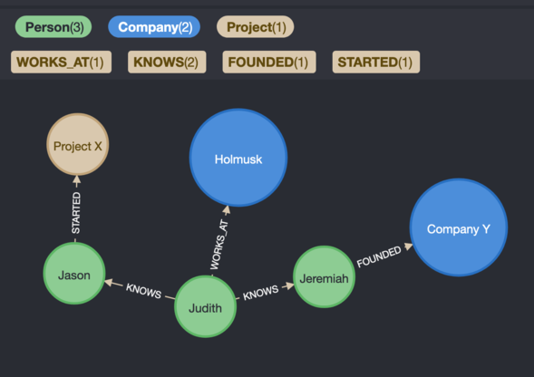
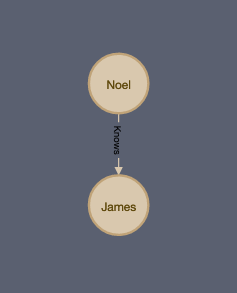

The Project we worked on
To start off, let us talk about the problem we were trying to solve.
In a rapidly expanding company like Holmusk, institutional knowledge is decentralized, making it difficult for an individual to tap this information.
Institutional knowledge alludes to the information we have as a company — the collective network of people and companies we have worked with, our research, our professional experiences and so on.
This provides business intelligence we can utilize when planning strategies for Holmusk. For example, we can examine existing relationships to discover strategic partnerships, or find impactful projects.
This problem can be solved in two parts:
By aggregating the sources of data we already have. For instance we can extract data from LinkedIn, storing the network of people and companies we know.
Allowing our users to ask meaningful questions to search for information. For instance, who has worked on a particular project or knows someone at a specific company.
Our team of four software engineer interns has been working on such a solution in the past 2 months, and the product is the Holmusk Collective.
Neo4j, a graph database, was used to power our web application. We want to elegantly and efficiently represent Holmusk’s resources as a network. To do so, we model it as a graph, storing relationships between our resources.
The diagram below can give you a sneak peek of what is behind the curtains of our solution.

With reference to the above diagram, this allows our users to learn about relationships. For example, we could ask who has worked on a particular project or with a potential client.
The answers we receive would then provide guidance for critical business decisions.
Project Architecture
In the team that was building this web app, each member came in with a different level of experience in software engineering. Hence, all members had to learn and adjust as they progressed. The difference in the level of experience also influenced the architecture of the project. Noel, the team lead, is going to reflect more on how the architectural choices.
Frontend
We used ReactJS + Tailwind.css for the frontend development because a member of the team was already familiar with these tools. Since the rest of the team did not have much experience with frontend development, going with this tech stack was the most prudent choice.
Backend
While using Haskell would have been ideal, we took the timelines and experience levels of our team into consideration, and decided to go with JavaScript.
Getting comfortable with Haskell would probably haven taken at least 2 weeks, after which there would still have been more to learn. Therefore, going with a language that was easy to pickup and learn was the best choice for us.
Database
In order to construct the network that we had in mind, the most prudent choice was to use a graph database (since networks can be represented as graphs).
We considered AWS Neptune along with other alternatives, but in the end Neo4j was decided on given its ease of use and developer friendliness.
On the simplicity of Neo4j
The queries in Neo4j pattern match against the actual database structure, which is helpful in gaining intuition in using them. The two most basic components are nodes and relationships. Using those components, we have the ability to model Holmusk’s network. The examples below can give you some insight about how it works.
Creating nodes
CREATE (person:PERSON {name: 'Noel'})
Creating relationships
CREATE (person)-[:Knows]->(another_person)
Searching for nodes which match a relationship
MATCH (person)-[:Knows]->(another_person) RETURN *

Once the choices were made on the architecture of the project, further adaptations had to be made. The frontend engineer of Holmusk Collective, Ivan, reflects on some challenges he faced.
“To be honest, one of the hardest things for me was to adapting from a more imperative style of programming to a more functional style of programming.”
— Ivan
Let us take a closer look at what that involved.
Functional vs Imperative
In the context of React, there are various types of components. Of interest to us are the stateless (functional) and stateful (imperative) components.
Statelessness means that components do not manipulate any state within, they only render state passed to them in their props.
Statefulness means that components store state within and manipulate / render this state.
An example of a button in an stateful style is:
const Button = () => {
const [name,setName] = useState('Ivan')
<button onClick = {()=>setName("Tomatoes")})>
Set Name
</button>
}As a stateless component however, a button looks as follows:
const SET_USER_NAME = 'SET_USER_NAME'
const INITIAL_STATE = {
name:null,
age: null,
occupation: null
}
function reducer(state, action) {
switch (action.type) {
case SET_USER_NAME:
const { name } = action.payload
return {...state,name}
default:
return state
}
}
const setUserName = () => {
const [name,dispatch] = useReducer(reducer, INITIAL_STATE)
return(
<button onClick = {()=>dispatch({type:SET_USER_NAME,payload:{name:"Tomatoes"}})>
Set Name
</button>
)
}As you can see, using a functional style introduces boilerplate code. In a project set-up, the reduced, action types and buttons are to be defined in three separate files: reducer.js , actionTypes.js and button.js unlike the imperative’s clean and succinct single file definition. For now, it may seem like an imperative style of programming wins out flat as it is cleaner and more succinct. However, in the long run, the advantages of an imperative style do not outweigh the benefits of a more functional style, especially when it comes to two main areas — Testing and Nested Components.
Testing
When it comes to testing a functional component, all we need to do is to run a simple Jest test. This is because the functional style code separates out frontend code into model, view, message and update logic. The react component only renders the model we feed it. Hence we avoid storing internal state for each component and mutating it through side effects. In larger systems this keeps the functionality of the component clear.
Say our application hinges on a series of buttons being clicked and we have defined a reducer that looks like this:
function reducer(state, action) {
switch (action.type) {
case action1:
// do something
case action2:
// do something
case action3:
// do something
default:
return state
}All we need in order to test our application logic is to run the following in jest and we have effectively ensured our function works the way we want it to.
it('returns new state for "update" type', () => {
const initialState = OurInitialState;
const updateAction = {type: 'update' };
const updatedState = reducer(initialState, {type:action1);
expect(updatedState).toEqual(desiredState);
});
it('returns new state for "update" type', () => {
const initialState = OurInitialState;
const updateAction = {type: 'update' };
const updatedState = reducer(initialState, {type:action2);
expect(updatedState).toEqual(desiredState);
});
it('returns new state for "update" type', () => {
const initialState = OurInitialState;
const updateAction = {type: 'update' };
const updatedState = reducer(initialState, {type:action3);
expect(updatedState).toEqual(desiredState);
});In an imperative style, this would require a number of steps:
- Create a virtual DOM
- Start working on some sort of
css/xPathselected to select the relevant elements - Use JavaScript to click individual components and ensure the relevant data pops-up
- Use more JavaScript and pray it doesn’t break when you modify a single CSS Class or variable
Reusable/Nested Components
Another benefit of a functional style becomes clear in the aspect of nested and large reusable components.
For example, suppose there are three different buttons we want to render on our page, in an imperative style:
const Button = () => {
const [name,setName] = useState('Ivan')
const function1 = () => {
doSomething ...
}
const function2 = () => {
doSomething ...
}
const function3 = () => {
doSomething
}
return (
<button onClick = {()=>function1()})>
Set Name
</button>
<button onClick = {()=>function2()})>
Set Name
</button>
<button onClick = {()=>function3()})>
Set Name
</button>
)
}Now, let’s examine our view logic for our functional component:
const setUserName = ()=>{
const [name,dispatch] = useReducer(reducer, INITIAL_STATE)
return(
<button onClick = {()=>dispatch({type:action1,payload:{name:"Tomatoes"}})>
Set Name
</button>
<button onClick = {()=>dispatch({type:action2,payload:{name:"Tomatoes"}})>
Set Name
</button>
<button onClick = {()=>dispatch({type:action3,payload:{name:"Tomatoes"}})>
Set Name
</button>
)
}The latter is significantly easier to scale. All that’s needed to add an additional button is
- Add a new action type
- Define a new case in the reducer
All coding style talk aside, in Ivan’s words:
This is the actual representation of trying to code up a frontend interface.

As most projects, this project was managed using GitHub. This is another aspect where it was important to take the levels of experience into consideration. While some team members were comfortable with GitHub, others needed time and (thankfully revertible) accidents to learn. Daniel, one of the backend engineers reflects on his first close up experience with Git,
“The extent of my exposure to Git before coming to Holmusk was pushing out from my local branch and overwriting my git repository for a school project. Having to collaborate with a team made me pickup Git really quickly, learning major concepts like what commits and branches are, and how to merge and rebase. However, things weren’t always so rosy, merging and rebasing threw me off a few times.”
— Daniel
Leyli, the other backend engineer, sums up her Git accidents:
Git for newbies
Git rebase 101
Rebasing is used when the time comes to merge branch X into the master branch.
A -> B # Our master branch has commits A and B
A -> B -> C -> D # Our branch X has commits C and D on top of those from masterSuppose we have a third branch, Y that gets merged into master first.
A -> B -> E # Branch Y added commit E after being merged
A -> B -> C -> D # Now branch X differs from master, it does not have commit E!Running a rebase of branch X against master stacks the differing commits on top of master:
Note that we mark the commits C and D with apostrophes. This is because they are different commits now, as we rewrite their commit history to consider the changes from E as well.
The perk of rebasing is the linear history, which makes it easy to interpret the changes to the project.
There are drawbacks however to this approach. Taking branch X as an example, we actually change commits C and D to C' and D'. This means that we manually rewrite our commit history. This can be dangerous when applied to commits with a lot of merge conflicts, since we can mutate important parts of commits C and D. With merge however, we can always reverse the changes by reversing the merge commit.
To balance this out, we kept our commits small and ensured work was distributed with little overlap. This resulted in fewer merge conflicts and at the same time permitted us to keep a linear commit history.
Git reflog
Now as an example, say you have been working on a local branch that hasn’t been pushed out yet, and before pushing to origin, you rebase and accidentally delete all code written locally. What can you do? Luckily, git reflog allows to revert changes even after rebasing.
daniel@daniel-VirtualBox:~/projects/HolmuskDB/backend$ git reflog
c986303 HEAD@{15}: pull --rebase origin master: checkout c986303b53fbee559d94a3f9a663fe74eafc120f
dabeb66 HEAD@{16}: commit: Tests, added index initialization via npm script
0c06c73 HEAD@{17}: commit (amend): Added FuzzySearch (#31)Git reflog lists recently-performed actions, letting you see changes and move back and forth between them. At the line with HEAD@{15} you can see that the current branch has been rebased, if you wanted to revert to before the rebase, you could do git checkout to HEAD@{17} and move to a version of the codebase prior to the rebase. This tool saves a lot of time when accidents happen.
We have seen the importance of logging changes in a branch, which hint at the importance of logging in general. It is always useful to be able to go back and see what changes have been made. Daniel reflects on how he came to the conclusion while working on the backend:
When I first started resolving a given issue, I had a lot of trouble figuring out what the issue even is and where errors were popping up from. Was I piping the data incorrectly? Was the endpoint even receiving any input? I was basically working blind.
Between the architecture, stylistic choices, and the Git learning curve, we as a team experienced personal growth in a professional environment. So let us see what each team member filled their lessons-learnt list with.
Daniel
Software Engineer Intern — API
Off work, I enjoy reading webnovels and playing all sorts of different games. I dabble in boardgames like Mafia, tabletop games like Dungeons and Dragons and all sorts of different video games. Working at Holmusk is my first experience working with Javascript, I usually program in OCaml.
Milestones are a great way to stay motivated
Admittedly at the beginning of the internship, I often times felt lost and confused, hurting my motivation to continue working on a task for the day. But the first time that I managed to get a web endpoint working, and tested it and saw my input go through a server and receive back an output, it felt really really invigorating. Since that point, I’ve always tried to look forward to significant milestones in progress, it helped me in staying motivated rather than shipping out a small feature here and there.
Leyli
Software Engineer Intern — Database wrangling
In my free time, I play the piano, volleyball and sing in a barbershop chorus. When having access to a kitchen, I love experimenting with cooking and baking. Recently, having set up a small kitchen in my dorm suite, I have been working towards perfecting my knife skills.
Coming in with no prior software development experience was frankly daunting. Week 1—think of those roller coasters that take you a good hundred meters up while building up the anticipation and excitement, but also bring you down real quick. With the onboarding, meeting a new team and the prospect of learning new things, I was somewhere at the top of that roller coaster, but having cloned the project repository to my laptop—well, that’s a different story. However, two months later, I still want to keep riding that roller coaster with all of its ups and downs. Here’s what I learned on my rides so far.
Ask Google or ask a teammate—just make sure you ask
As a rule of thumbs, if a question comes to mind, chances are someone has already asked it online. This is probably no news to developers, but I had to remind myself of this whenever I got too carried away trying to do everything on my own. Also remind yourself that if your teammates don’t know you are struggling, they can’t help you. This becomes especially important as we are working remotely. So, get comfortable with acknowledging that there are things you don’t know, and get comfortable with actively asking for help to learn those things.
As a newbie especially, step 0—break down tasks, and step 1—understand exactly what needs to be done
In retrospect of Week 1, I realise most of the struggle happened because I wasn’t asking for enough clarifications, and help. Obviously (or not) enough, one can’t figure out how to do X without first knowing what X is. So, don’t skip steps.
Writing a test prior to implementing a function helps one understand the functionality and take note of the edge cases—mark this as step 1.1.
Console and documentation are your friends in learning a language from scratch
Even as a newbie developer, you are probably familiar with the process of picking up the general syntax of a language. Once that’s done, the nitty-gritty of a language can be picked up from the documentation and experimentation in console. In my experience, that applied to both Cypher and JavaScript
Set your priorities straight
Let’s face it—first versions are not pretty. At first, my personal priority was to get an endpoint up and running. It was not always the most efficient, safe or clean code, but at least it worked. Once you feel comfortable on that front, it is key to start reasoning about the program you are writing—think efficiency, mutability, data structures. That of course needs some prior theoretical knowledge as well as continuous research driven by thirst for knowledge.
Code quality
When asked, “Can you come back in a year, look at the code and still understand it?”, and your answer is negative, then your code quality can be improved.
Ivan
Software Engineer Intern — Frontend design and implementation
I like to read and sleep a lot in my free time. I’ve been quite obsessed lately with Ghost of Tsushima recently and that has taken a lot of my time. I think Software should have the same level of detail as a game, having a keen and obsessive level of detail for the end to end user experience and I hope to be able to do that in my own right!
Great Autonomy!
Working at holmusk was an amazing experience! I had some prior experience working with Javascript and Python at an earlier internship but being part of a team to bring an idea from start to finish had me completely out of my comfort zone. I initially struggled with having to define my own tasks because of the ambiguity around it all. What do I do? What do I prioritise? It took a while getting used to it but the autonomy that came it was empowering.
Functional beats imperative
A functional style allows for cleaner testing and scaling of components. I didn’t go through it in extreme detail here but when it comes to nested components and all you’re passing down is an action type, development speed increasing significantly. With the ease that functional style brings to testing and scaling of your application, I hope I’ve given you some insight into why you should consider adopting a more functional style of programming for your applications too!
Noel
Software Engineer Intern — Team lead
I enjoy writing programs in functional languages my favourite being Haskell. I recently wrote a raytracer in Rust with the help of raytracing in a weekend. When I have time, I enjoy playing board games as well.
This was the first time I led a team of engineers to build a product. It was daunting at first, but I got more comfortable with time thanks to my supportive teammates and guidance from the other engineers at Holmusk.
What should your priorities be?
To start off, you should set a few clear goals and priorities as a team lead to give decisions a direction.
As a team lead, you should always have a clear mind and plan as much as you can. This gives your team confidence and trust in your decisions.
You should keep an eye on the team’s stress levels as well. This prevents burnout which is disastrous in a project like this, with only 2-3 months of runway. You can consistently check whether the work is interesting for them and set sufficient buffers to cater for unforeseen setbacks.
We should also set clear standards for code quality. This will be easier to enforce with tools such as Eslint or StandardJS, which you can run in the CI. This makes code more readable and maintainable. You will be doing a lot of reviews and catching formatting errors again and again is not fun.
Mentoring tips
Some of the developers came in without experience in professional software development. That was alright because they were receptive learners.
As a team lead your job would be to bring these people up to speed. In my case, I chose to pair program with them in the first 2 weeks. We paired back to back in 45 minute work / 15 minute break sessions, taking turns to write tests and implement features. This makes it easy for them to ask you questions.
Observe your team and see who needs more active help. Not everyone will feel comfortable asking you for assistance when they need it. Sometimes they don’t know they do. As a team lead you can take initiative to ask them if they need guidance, especially for more junior developers. They can be stuck on problems for 1-2 days which should be resolved within an hour. You can also schedule brief daily standups which can give you indicators of the team’s progress and synchronise everyone.
Be conservative and practical
You will encounter design decisions which seem reasonable. Those which require huge rewrites should be carefully considered. In most of the cases they are not immediate concerns. You can put them in an icebox first and revisit them only when necessary.
Code reviews
Get comfortable with saying no to yourself and the team. While writing code it is tempting to add in small changes here and there to improve the UI or code structure. If it isn’t in the scope of the PR, say no to these changes. They might be marginal in their impact but these add up and contribute to technical debt.
Ask questions when you don’t understand something entirely. I hand waved PRs through at the start of the project for frontend and this came back to haunt me. I realised I could not understand the code structure. I had to spend a week to seek advice from other engineers and do some research about best practices for frontend. We settled on following design principles from Functional Reactive Programming which made the code a lot more readable and clear.
Prioritise quality. It is tempting to prioritise features, but you will probably need to refactor parts of the code down the road. If your code base is of poor quality you will lose a lot more time trying to untangle the mess.
The bigger picture
After the initial demo, besides pending improvements in code structure and quality, the team had to decide on the direction of the project— a business use case. In retrospect, coming up with a clear use case should have been our key priority as that would be a natural guide in writing specifications.
Post initial demo, there were a few actionables such as enabling fuzzy search, or refining the parameters based on which the search feature will work, or refining the frontend, or populating the database. This indicates that having the first demo midway through internships was helpful because it provided a new user perspective, and thereby guidance on what features need to be furthered, or the opposite— limited.
With this new user perspective, we decided on a single use case for Holmusk Collective. The current version of the app now has the ability to store information found in a contact card— name, contact information, location, company information, and position. In addition, the app stores the relations between the people whose contact information was added to the DB. Once stored, this information can be looked up through searching for a company, a position or a name.
Looking back at the introduction, this is a subset of the originally-intended features. However, given the timeline and the standards we set as a team, we aimed for quality over quantity. Hence, although the intended potential hasn’t been fully exploited, the product does deliver functionality for a single use case that we were able to narrow down to.